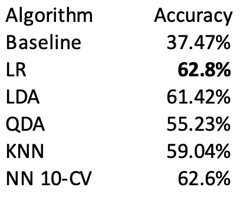

Predicting Top Chart Songs Using Spotify Data
Trevor Garner, Morgan McGuinn, Taylan Selman, Khushi Magiawala, Kira PanchaFall 2020 CS 4641 Machine Learning: Class Project
Georgia Tech
Introduction/Background/Problem Definition
We chose to look at music trends and charts in the United States because of our team’s collective love for music. Our goal is to produce a predictive model using supervised learning. Our product should be able to predict if a certain song will chart in the top 50 of Billboard’s Hot 100 based on certain features. Through this project, we’ll analyze how the world’s music taste has shifted over the last decade. If time permits, we may see which features affect the popularity of a song/track the most. We hope that our predictive model will serve as a solution for upcoming artists trying to figure out what type of song does well on the Billboard Hot 100. Getting a song on this chart increases song and artist exposure: this can lead to record deals and a growth in sales. Record-labels could potentially use our product to reduce resource waste. By figuring out which songs and thus, artists, will chart, the record company can allocate more funds and marketing resources towards that specific release. Creating a predictive model using classification and regression algorithms using data from Spotify and Billboard’s API to analyze what song features are most prominent in the top 50 of Billboard’s H100.Data Collection
Source: https://data.world/kcmillersean/billboard-hot-100-1958-2017We are dealing with two data sets: one from Billboard Hot 100 and one taken from Spotify’s API.
Data Cleaning:
To prepare our data for the learning models, we filtered out any unnecessary variables/features and joined the two data sets on song id. Both the Billboard and spotify data sets originally included thousands of entries. However, once we combined the two data sets and removed duplicate, irrelevant and incomplete entries, our data set was reduced to around 840 entries (data points). A sample of our code for filtering entries from the Billboard set is below:index_names = billboard_df[ (billboard_df['WeekID'] < 2008) | (billboard_df['WeekID'] > 2019) ].index
billboard_df.drop(index_names, inplace = True)
billboard_df.drop_duplicates(subset='SongID', inplace=True)
billboard_df.dropna(axis=0, inplace=True)
Here, we remove entries that did not chart between 2008 and 2019, entries with the same song name, and entries that have any null feature fields. We chose the years 2008 and 2019 because Spotify only came out in 2008, and we know that the data for 2019 is complete, whereas data for 2020 may be updated at different times in the Billboard and Spotify datasets since the year is not over. Dropping duplicate songs is necessary because we only want to consider one time the song charted. This specific script only keeps the first instance of each song in the dataset, which worked for our purposes because there is a column that has the song’s peak position. Therefore, we could’ve kept any arbitrary entry for any given song. Finally, we opted to deal with null columns by removing any rows that had null values. Since there were not many rows that fell under this category, we chose this approach because the information loss would not be too large. However, there are other approaches that we considered that would’ve better dealt with information loss, such as filling in null fields with the most frequent value for that feature, or actually predicting the missing values. The reduction in size of our data set is logical. The spotify data set included songs not included in the billboard set. The billboard data set included an entry for every single week a song had charted, so we chose only to include the peak position of the song. Our final sample size is 839.

Here is a link to our cleaned csv file
Feature Selection
Methods
We chose various classification techniques on our data set. These include Linear Discriminant Analysis (LDA), Quadratic Discriminant Analysis (QDA), Nearest Neighbors (KNN), and Neural Net (NN). Linear and Quadratic Discriminant Analysis were chosen because these algorithms can reduce the dimensionality of our data, similar to PCA, but in addition to finding the component axes that maximize the variance of our data (PCA), we are additionally interested in the axes that maximize the separation between multiple classes (LDA). Since our data had low variance scores we decided to implement K-Nearest Neighbors (KNN) which assumes our data is in close proximity to each other. Then we used the calculated groups to predict which label our new data falls under. Lastly, we implemented a Neural Network with 8 input nodes, 2 hidden layers, and 1 output node to predict our new data. All of these classification techniques come with their own pros and cons which is why we incorporated each of them. Thus, giving us a good perspective on which algorithms work best with our data set.Results
To obtain our results we used an 80/20 train test split. Where 80% of the data was used to train each model and 20% of the data was used to access the accuracy of each model. For our NN we used a batch size of 10 as we had around 850 data samples, and we achieved the best results while using a batch size of 10.

It is evident that our Neural Net performs the best with our data, garning a accuracy of 76.13%. The worst being Quadratic Discriminant Analysis with an accuracy of 55.23%. There are several factors as to why our accuracy values are better than our baseline results but not high achieving. The main reason is because each feature in our data set has a low amount of variance. This causes our data to become “clumped” together thus making any classification harder. This is especially seen in feature dimensionality reduction algorithms such as PCA (reference the feature selection section), LDA, and QDA. Which gives us the reason as to why the accuracy values of LDA and QDA are much lower than our neural network. Overall, we are happy with the results so far with an accuracy rating of 76.13%, but we hope to increase this by at least 5% in the future.
Discussion
Preliminary results show relatively robust prediction accuracy, well above the baseline (naive) approach, with the Neural Net accuracy peaking at 76.13%. We believe accuracy is a bit worse than comparable approaches (achieving 80-90% using similar models as well as bagging, which we can add in future iterations) due to low feature variance, which can perhaps be remedied with more data cleaning and feature selection. Another possible explanation for the accuracy loss is that listener preferences change over time––a song that charts in the top 50 in 2008 might not in 2015. In future iterations, we would account for this impact using a Long Short-Term Memory (“LSTM”) model. In our last report, we researched similar projects and based our prediction on their results: Several models have been proposed to predict a song’s success [1]. From current results, Neural Net models have the highest accuracy of 77% [2]. However, changing the time parameters to focus on recent music from 2015 to 2018 yielded better results for the NN with an accuracy of around 86% [2]. This shows that newer songs are becoming harder to predict with previous models. It’s possible that between 2015 to 2018 there was a change occurring in the overall taste of music or that the general population was becoming more aware of other genres of music. Because of this, we implemented different variations of models to ensure a high accuracy rating is achieved and plan to test out some more as well, such as LR. Our prediction, for the most part, was accurate. NN had the highest accuracy of 76% (really close to the 77% accuracy our source got).References
References:[1] https://towardsdatascience.com/song-popularity-predictor-1ef69735e380
[2] http://cs229.stanford.edu/proj2018/report/16.pdf
[3] https://github.com/siddgood/billboard-hit-prediction
[4] https://data.library.virginia.edu/visualizing-the-effects-of-logistic-regression/
[5] https://developer.spotify.com/documentation/web-api/reference/tracks/get-audio-features/
[6] https://www.sciencedirect.com/topics/medicine-and-dentistry/logistic-regression-analysis
[7] https://www-users.cs.umn.edu/~kumar001/dmbook/ch4.pdf
[8] https://data.world/kcmillersean/billboard-hot-100-1958-2017